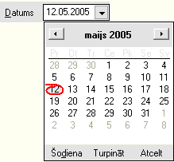
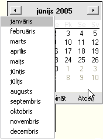
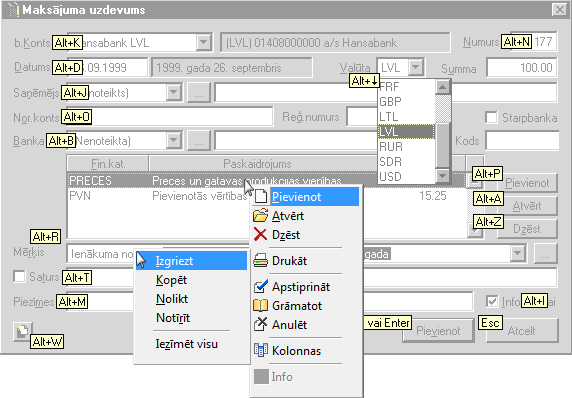

Dažāda veida lauku aizpildīšana¶
Datuma lauki¶
Datuma lauki ir paredzēti datuma ievadīšanai. Datuma laukus var aizpildīt no kalendāra vai ievadot ar klaviatūras palīdzību. Datuma lauku gada skaitlis aizpildās automātiski.
Ievadiet datuma laukā vajadzīgās dienas datumu un mēnesi, spiediet taustiņu Tab , lai pārietu pie nākamā lauka aizpildīšanas. Sistēma automātiski papildinās lauku ar patreizējo gada skaitli. Gadījumā, ja dienas vai mēneša datums sastāv no viencipara skaitļa, nav nepieciešams ievadīt nulles šo skaitļu priekšā!
Datuma lauku var aizpildīt ar kalendāra palīdzību. Kalendāru var
atvērt ar taustiņu kombinācijas Alt+  (bulta
„Uz leju”) palīdzību vai izmantojot peli.
(bulta
„Uz leju”) palīdzību vai izmantojot peli.
Nepieciešamo datumu no kalendāra var izvēlēties ar peles palīdzību. Pašreizējās dienas datumu var izvēlēties ar datuma komandpogas palīdzību. Izmantojot datuma komandpogai blakus esošās pogas, var atvērt pagājušā vai nākamā mēneša datumus.



Kalendārs¶
Datuma laukus var aizpildīt no kalendāra. Kalendāru var izsaukt ar
taustiņu kombinācijas Alt+ palīdzību vai
izmantojot peli.
Datuma izvēle ar klaviatūras palīdzību
Ar virziena taustiņiem (
 ) pārvietojieties uz izvēlēto datumu. Pa
mēnešiem var pārvietoties ar taustiņu PageUp vai PageDown palīdzību.
Pārvietoties pa gadu var ar taustiņu Ctrl+PageUp un Ctrl+PageDown
palīdzību. Datuma izvēli veiciet ar taustiņa Enter palīdzību.
Kalendāru bez datuma izvēles var aizvērt spiežot taustiņu Esc .
) pārvietojieties uz izvēlēto datumu. Pa
mēnešiem var pārvietoties ar taustiņu PageUp vai PageDown palīdzību.
Pārvietoties pa gadu var ar taustiņu Ctrl+PageUp un Ctrl+PageDown
palīdzību. Datuma izvēli veiciet ar taustiņa Enter palīdzību.
Kalendāru bez datuma izvēles var aizvērt spiežot taustiņu Esc .
Nepieciešamo datumu no kalendāra var izvēlēties ar peles palīdzību.
Ar *peli *noklikšķiniet uz izvēlēto datumu. Pa mēnešiem
pārvietojieties ar komandpogu  un
un
 palīdzību. Lai aizvērtu kalendāru un ieliktu
izvēlēto datumu datuma ievades laukā (no kura tika izsaukts
kalendārs), spiediet komandpogu Turpināt . Kalendāru bez datuma
izvēles var aizvērt spiežot komandpogu Atcelt . Uz šodienas datumu
kalendāru var pārvietot ar komandpogu Šodiena . Jebkurā gadījumā pēc
datuma izvēles jāspiež komandpoga Turpināt vai taustiņš Enter .
palīdzību. Lai aizvērtu kalendāru un ieliktu
izvēlēto datumu datuma ievades laukā (no kura tika izsaukts
kalendārs), spiediet komandpogu Turpināt . Kalendāru bez datuma
izvēles var aizvērt spiežot komandpogu Atcelt . Uz šodienas datumu
kalendāru var pārvietot ar komandpogu Šodiena . Jebkurā gadījumā pēc
datuma izvēles jāspiež komandpoga Turpināt vai taustiņš Enter .
Ar *peli *ir ērti izvēlēties mēnešus. Šim nolūkam jānoklikšķina uz mēneša nosaukuma kalendāra virsrakstā. Atvērsies visa gada mēnešu izvēlne:

Tāpat, noklikšķinot uz gada skaitļa kalendāra virsrakstā, parādīsies gada maiņas komandpogas:

Darbs ar tekstu¶
Darbā ar tekstu ir ērti ir izmantot iespēju īslaicīgi saglabāt tekstu datora atmiņā. Ja ir nepieciešams ievadīt vienu un to pašu informāciju vairākkārtīgi dažādās sistēmas formās, var izmantot datu kopēšanas, izgriešanas un nolikšanas iespējas.
Iezīmējiet nepieciešamo tekstu un izmantojiet rīku joslas ikonas vai taustiņu kombinācijas, līdzīgi, kā MS Office programmās. Darbam ar tekstu jāizmanto rīku joslas komandas Izgriezt, Kopēt, Nolikt. Komandu aktivizēšanai var lietot arī taustiņu kombinācijas.
Lai izgrieztu iezīmēto tekstu, jālieto taustiņu kombinācija Ctrl+X . Uzklikšķinot kursoru vietā, kur jānovieto teksts, jālieto taustiņu kombinācija Ctrl+V , lai noliktu izgriezto tekstu. Līdzīgi var kopēt iezīmēto tekstu, izmantojot kombināciju Ctrl+C . Komandu aktivizēšanas taustiņu kombinācijas ir redzamas galvenajā izvēlnē.
Izmantojot teksta kopēšanas iespēju, var mainīt burtu reģistru no izvēlnes
>Teksts > Bufera reģistrs
Teksta bufera reģistru var izmantot sekojoši:
ar taustiņu kombinācijas Ctrl+C palīdzību, jānokopē teksts;
ja tekstu nepieciešams pārvietot citā laukā, var izmantot teksta
izgriešanas taustiņu kombināciju Ctrl+X ; + no izvēlnes >Teksts > Bufera reģistrs jāizvēlas teksta reģistrs - Augšējais, Apakšējais vai Teikums; + ar taustiņu kombinācijas Ctrl+V palīdzību jānovieto teksts
nepieciešamajā vietā.
 Bufera reģistru var izmantot tikai tādos
ekrāna formu laukos, kur dati tiek ievadīti ar klaviatūras palīdzību.
Fiksētās izvēles laukos bufera reģistrs nedarbosies
Bufera reģistru var izmantot tikai tādos
ekrāna formu laukos, kur dati tiek ievadīti ar klaviatūras palīdzību.
Fiksētās izvēles laukos bufera reģistrs nedarbosies
Bufera reģistrs¶
Paskaidrojums¶
Augšējais Visi teksta burti ir lielie Apakšējais Visi teksta burti ir mazie Teikums Vārda pirmais burts ir lielais
Taustiņu lietošana¶
Visas nepieciešamās darbības grāmatvedības sistēmā var veikt ar taustiņu kombināciju palīdzību. Grāmatvedības sistēmas “Ozols” datorprogrammās izmantojamajiem taustiņiem Enter, Tab, Esc, Shift+Tab ir speciāla nozīme.
Darbības apstiprināšanai lietojiet taustiņu Enter . Tomēr lietojiet šo taustiņu apdomīgi! Atšķirībā no DOS programmām, taustiņš Enter bieži vien aizver visu ekrāna formu – pievieno dokumentu.
Nepareizas taustiņa lietošanas gadījumā, ja ir pievienots vēl nepabeigts dokumentu, nesāciet to veidot atkārtoti! Atrodiet šo ierakstu ekrāna formā un labojiet to, papildinot ar visu nepieciešamo informāciju.
Taustiņu Enter var lietot, lai pievienotu izveidoto dokumentu pārējo dokumentu sarakstam vai apstiprinātu izvēlēto ierakstu fiksētas izvēles lauka aizpildīšanai. Atteikšanās gadījumā lietojiet taustiņu Esc . Šis taustiņš paredzēts arī formu aizvēršanai, aktivizējot komandu Atcelt vai Aizvērt.
Pārvietoties pa formu laukiem uz leju iespējams, izmantojot taustiņu Tab . Pārvietoties uz augšu - lietojot taustiņu kombināciju Shift+Tab . Tomēr reizēm šāda veida darbības var aizņemt daudz laika. Taustiņu kombinācijas var izmantot, lai aktivizētu noteiktu komandu vai novietotu kursoru noteiktā ekrāna formas laukā.
Taustiņu kombinācijas¶
Darbā ar grāmatvedības sistēmu “Ozols”, līdzīgi kā visās Windows programmās, var izmantot peli, bet jebkuru operāciju var veikt tikai ar klaviatūras palīdzību. Taustiņu kombināciju lietošana ir pilnīgi nepieciešama, ja jāievada liels datu daudzums – samazinās patērētais laiks un paaugstinās darba ražīgums. Taustiņu kombinācijas var lietot darbā ar tekstu.
Atverot kādu no ekrāna formām, redzams, ka katra lauka nosaukumā ir pasvītrots kāds burts. Lietojiet taustiņu Alt+pasvītrotais burts , lai paātrināti piekļūtu Jums nepieciešamajam laukam! Īpaši ērti ir tas, ka šīs kombinācijas nebūt nav jāmācās no galvas, atverot jaunu formu, pasvītroto burtu un taustiņu lietošanas kombinācijas būs līdzīgas, un tās būs redzamas jūsu datora ekrānā.
Lai atvērtu izvēlni, piemēram, Atskaites, spiediet taustiņu Alt+E (burts “e” ir pasvītrots vārdā “Atskaites”) un spiediet nākošo burta taustiņu, piemēram, atskaites nosaukumā pasvītroto A, lai atvērtu sociālās apdrošināšanas atskaites formu.
Komandu aktivizēšanai, kas ir kopējas visai sistēmai, lietojiet taustiņa Ctrl+pasvītrotais burts kombināciju. Šādas komandas un arī to taustiņu kombinācijas ir redzamas izvērstā galvenajā izvēlnē.
Taustiņu kombinācija¶
Paskaidrojums¶
Tab Pārvietošanās pa ekrāna formas laukiem uz leju Shift+ Tab
Pārvietošanās pa ekrāna formas laukiem uz augšu Esc Ekrāna formas
aizvēršana, komandas atcelšana Enter Dialoga vai ekrāna formas
aizvēršana, ieraksta pievienošana,
labošana, fiksētās izvēles lauka aizpildīšana Alt+ pasvītrotais burts
Paātrināta pieeja laukam, komandas aktivizēšana Ctrl+ pasvītrotais
burts Kopējo darbību aktivizēšana galvenajā izvēlnē Alt+
Fiksētās izvēles lauka izvēlnes atvēršana
Shift+
Paplašinātā saraksta atvēršana, ja aiz lauka ir paplašinātās izvēlnes
komandpoga (  )
)

- scale
100%
- scale
100%
- scale
100%
- scale
100%
- scale
100%
- scale
100%
- scale
100%
- scale
100%
- scale
100%
- scale
100%
- scale
100%
- scale
100%
- scale
100%
- scale
100%
- scale
100%
- scale
100%
- scale
100%
- scale
100%
- scale
100%